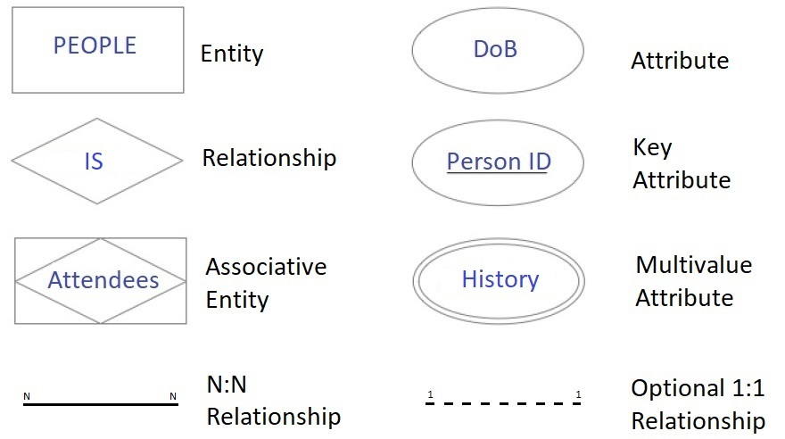
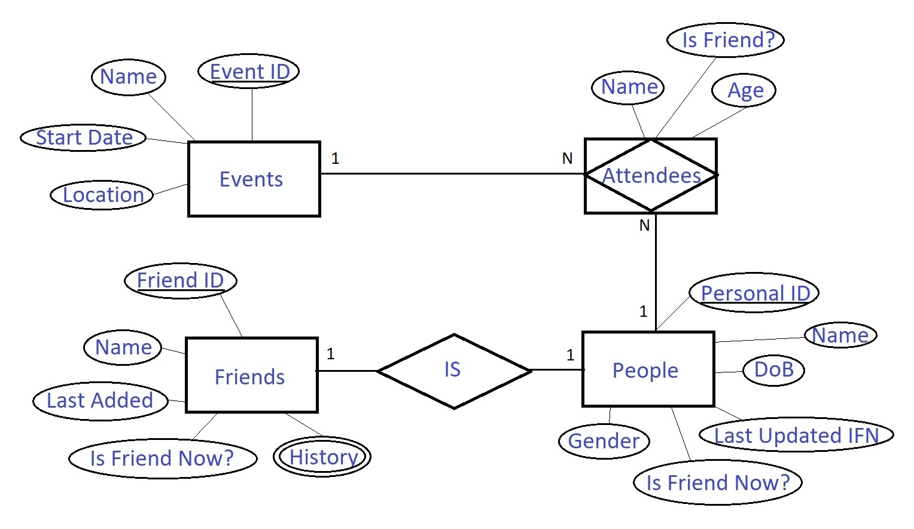
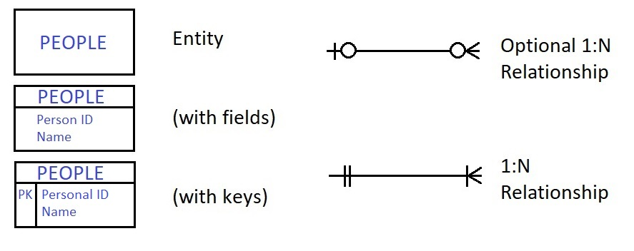
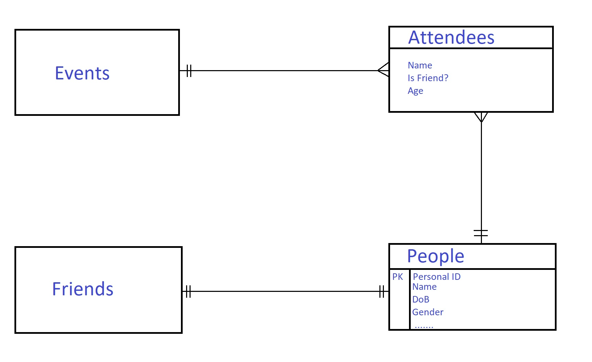
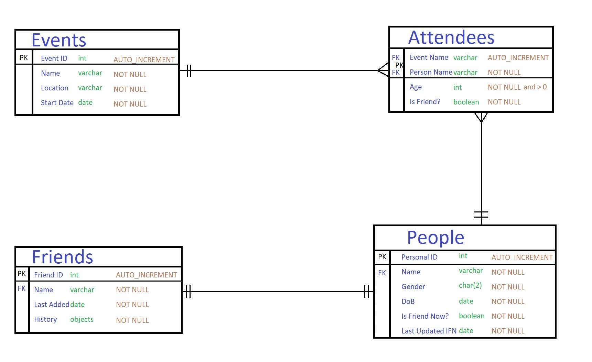

Entity Relationship Diagrams
This is a visual way to represent entities and relationships. However there are a number of different variations or notations. We will illustrate two of the most commonly found notations, namely Chen's and Crow's Feet notations. Sometimes these may be referred respectively to as conceptial and logical ERD.
Chen's Notation
This representation is less focussed on the fact that databases are tables. Instead it focusses purely on the relationships and entities. It can also include attributes but these may be omitted too. They key shapes and lines are illustrated below. Sometimes you may see additional shapes however these are rarely required and may be an evolution or variant of Chen's Notation.

Crow's Foot Notation
This representation is often more closely linked to actual databases. If your DBMS generated any ERD they will often use this or a similar format. Indeed Enhanced ERDs nearly always use this format and differ only in that all attributes are specified alongside both their data types and any constraints. However for normal Crow's Foot Notation ERD you only need the illustrated below shapes and lines.

If you used a DBMS to generate an ERD you may end up with an enhanced ERD (EERD) like below.

- You can't store attendees unless there is an associated event and person.
- This means you don't store all attendees - you only store one's you know about (i.e. in PEOPLE table)
- Similarly you don't store people who do not appear in your FRIENDS.
- And also you don't store any freind unless they're already a known person.